Entity Framework Core Learning Roadmap for Interview Preparation
Goal
This roadmap is focused on Entity Framework Core interview preparation.
Topic Index
- 1. Entity Framework Core Basics
- 2. DbContext and DbSet
- 3. Entities and Models
- 4. Relationships
- 5. Configuration
- 6. Migrations
- 7. Querying Data
- 8. Loading Related Data
- 9. Tracking and No Tracking
- 10. CRUD Operations
- 11. Transactions
- 12. Concurrency
- 13. Performance Optimization
- 14. Raw SQL and Stored Procedures
- 15. Repository and Unit of Work
- 16. EF Core with ASP.NET Core
- 17. Testing EF Core Code
- 18. Advanced EF Core Topics
- 19. Security, Diagnostics, and Best Practices
1. Entity Framework Core Basics
What to Learn
- What is EF Core?
- ORM concept
- EF vs EF Core vs ADO.NET
- Code-first vs database-first
- Entities, DbContext, DbSet
EF Core is an ORM that maps C# classes to database tables so you work with objects instead of raw SQL for most operations.
| Approach | Meaning |
|---|---|
| Code-first | Create entity classes first, then generate database using migrations |
| Database-first | Generate entity classes from an existing database |
| ADO.NET | Manual SQL and connection handling |
| EF Core | Object-based data access with change tracking and LINQ |
// Code-first: entity + DbContext
public class Book
{
public int Id { get; set; }
public string Title { get; set; }
}
public class AppDbContext : DbContext
{
public DbSet<Book> Books => Set<Book>();
}2. DbContext and DbSet
What to Learn
- Role of
DbContextandDbSet DbContextOptions, connection string, DI registrationOnConfiguring,OnModelCreating- DbContext lifetime and thread safety
DbContext is the main session with the database. DbSet<T> represents a table/collection of entities.
public class AppDbContext : DbContext
{
public AppDbContext(DbContextOptions<AppDbContext> options) : base(options) { }
public DbSet<Book> Books { get; set; }
public DbSet<Author> Authors { get; set; }
protected override void OnModelCreating(ModelBuilder modelBuilder)
{
modelBuilder.ApplyConfigurationsFromAssembly(typeof(AppDbContext).Assembly);
}
}Register in ASP.NET Core:
builder.Services.AddDbContext<AppDbContext>(options =>
options.UseSqlServer(builder.Configuration.GetConnectionString("Default")));DbContext is not thread-safe. Use one instance per request/operation, not shared across threads.
3. Entities and Models
What to Learn
- Entity classes, primary keys, foreign keys
- Navigation properties, required/optional fields
- Shadow properties, owned types, value objects
EF Core detects primary keys by convention: Id or {ClassName}Id.
public class Book
{
public int Id { get; set; } // PK by convention
public string Title { get; set; }
public decimal Price { get; set; }
public int AuthorId { get; set; } // FK
public Author Author { get; set; } // Navigation property
}
public class Author
{
public int Id { get; set; }
public string Name { get; set; }
public List<Book> Books { get; set; }
}Explicit key and required field:
public class Book
{
[Key]
public int BookId { get; set; }
[Required, MaxLength(200)]
public string Title { get; set; }
}Owned type example:
public class Order
{
public int Id { get; set; }
public Address ShippingAddress { get; set; }
}
public class Address
{
public string Street { get; set; }
public string City { get; set; }
}
// Fluent API
modelBuilder.Entity<Order>().OwnsOne(o => o.ShippingAddress);4. Relationships
What to Learn
- One-to-one, one-to-many, many-to-many
- Required vs optional relationships
- Cascade delete, self-referencing
| Relationship | Example |
|---|---|
| One-to-one | Book → BookDetail |
| One-to-many | Author → Books |
| Many-to-many | Students ↔ Courses |
One-to-many:
public class Author
{
public int Id { get; set; }
public List<Book> Books { get; set; }
}
public class Book
{
public int Id { get; set; }
public int AuthorId { get; set; }
public Author Author { get; set; }
}Many-to-many (EF Core 5+):
public class Student
{
public int Id { get; set; }
public List<Course> Courses { get; set; }
}
public class Course
{
public int Id { get; set; }
public List<Student> Students { get; set; }
}Fluent API with cascade delete:
modelBuilder.Entity<Book>()
.HasOne(b => b.Author)
.WithMany(a => a.Books)
.HasForeignKey(b => b.AuthorId)
.OnDelete(DeleteBehavior.Cascade);5. Configuration
What to Learn
- Data annotations vs Fluent API
IEntityTypeConfiguration<T>- Table/column mapping, indexes, defaults
Data annotations:
[Table("tb_books")]
public class Book
{
[Key]
public int Id { get; set; }
[Column("BookName"), Required, MaxLength(100)]
public string Title { get; set; }
}Fluent API (preferred for complex rules):
public class BookConfiguration : IEntityTypeConfiguration<Book>
{
public void Configure(EntityTypeBuilder<Book> builder)
{
builder.ToTable("tb_books");
builder.HasKey(b => b.Id);
builder.Property(b => b.Title).HasMaxLength(100).IsRequired();
builder.HasIndex(b => b.Title);
builder.Property(b => b.Price).HasDefaultValue(0);
}
}| Approach | Best for |
|---|---|
| Data annotations | Simple rules on entity class |
| Fluent API | Complex mapping, indexes, relationships |
6. Migrations
What to Learn
- Create, apply, remove, rollback migrations
- Migration history, SQL scripts, production updates
Migrations track schema changes over time and apply them to the database.
# Package Manager Console
Add-Migration InitialCreate
Update-Database
Remove-Migration
Update-Database AddBookToDb # rollback/forward to specific migrationCLI:
dotnet ef migrations add InitialCreate
dotnet ef database update
dotnet ef migrations script # generate SQL scriptEach migration creates Up() and Down() methods to apply or revert changes.
7. Querying Data
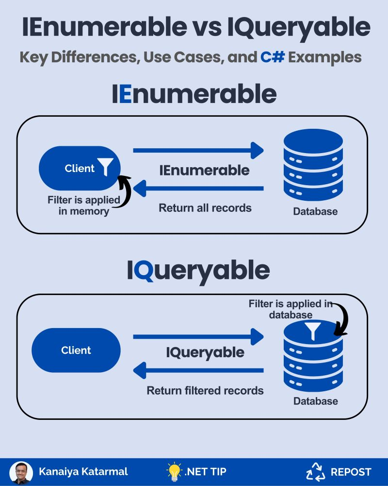
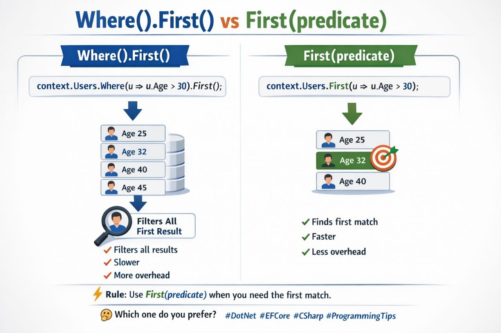
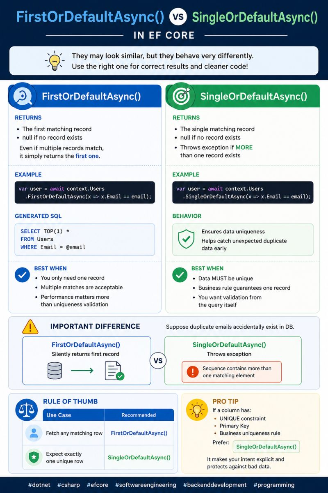
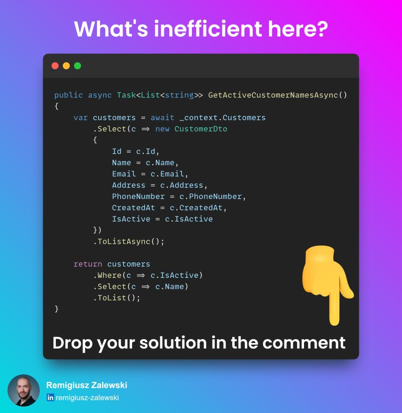
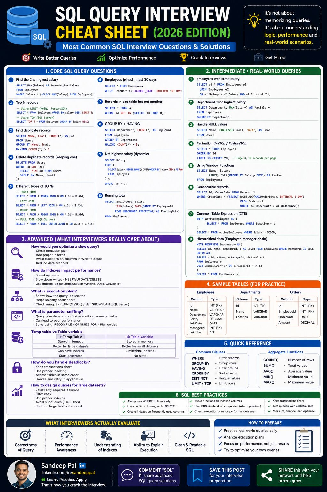
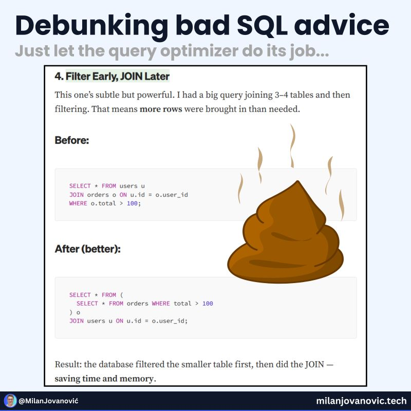
What to Learn
- LINQ to Entities, filtering, sorting, grouping, joins
- Projection, paging, query execution flow
// Filter + sort
var books = context.Books
.Where(b => b.Price > 10)
.OrderBy(b => b.Title)
.ToList();
// Projection (fetch only needed columns)
var names = context.Books
.Select(b => new { b.Id, b.Title })
.ToList();
// Group
var byAuthor = context.Books
.GroupBy(b => b.AuthorId)
.Select(g => new { AuthorId = g.Key, Count = g.Count() })
.ToList();
// Pagination
var page = context.Books
.OrderBy(b => b.Id)
.Skip(20)
.Take(10)
.ToList();Query execution flow:
- Open connection
- Translate LINQ to SQL
- Execute query
- Map results to entities
- Close connection
Use ToListAsync() in async apps instead of ToList().
8. Loading Related Data
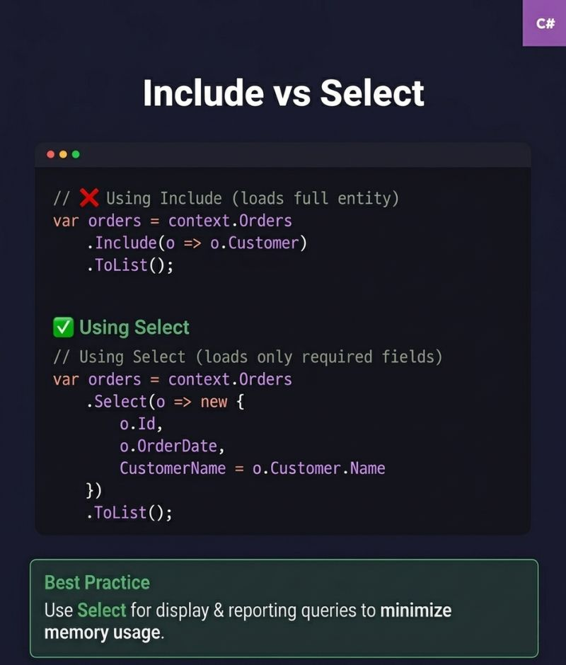
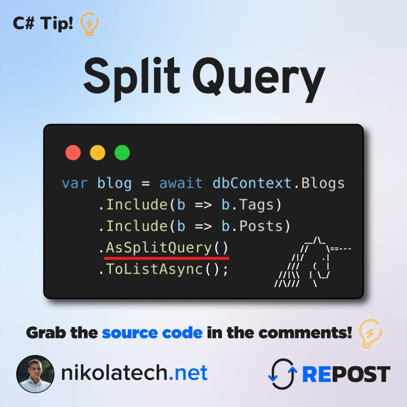
What to Learn
- Eager, lazy, explicit loading
Include,ThenInclude, N+1 problem
| Strategy | When to use |
|---|---|
| Eager loading | Related data needed immediately |
| Lazy loading | Related data needed later (requires proxies) |
| Explicit loading | Load related data on demand manually |
Eager loading:
var authors = context.Authors
.Include(a => a.Books)
.ToList();Nested include:
var orders = context.Orders
.Include(o => o.Customer)
.ThenInclude(c => c.Address)
.ToList();Explicit loading:
var author = context.Authors.First();
context.Entry(author).Collection(a => a.Books).Load();N+1 problem: loading parent list then querying each child separately. Fix with Include() or projection.
9. Tracking and No Tracking
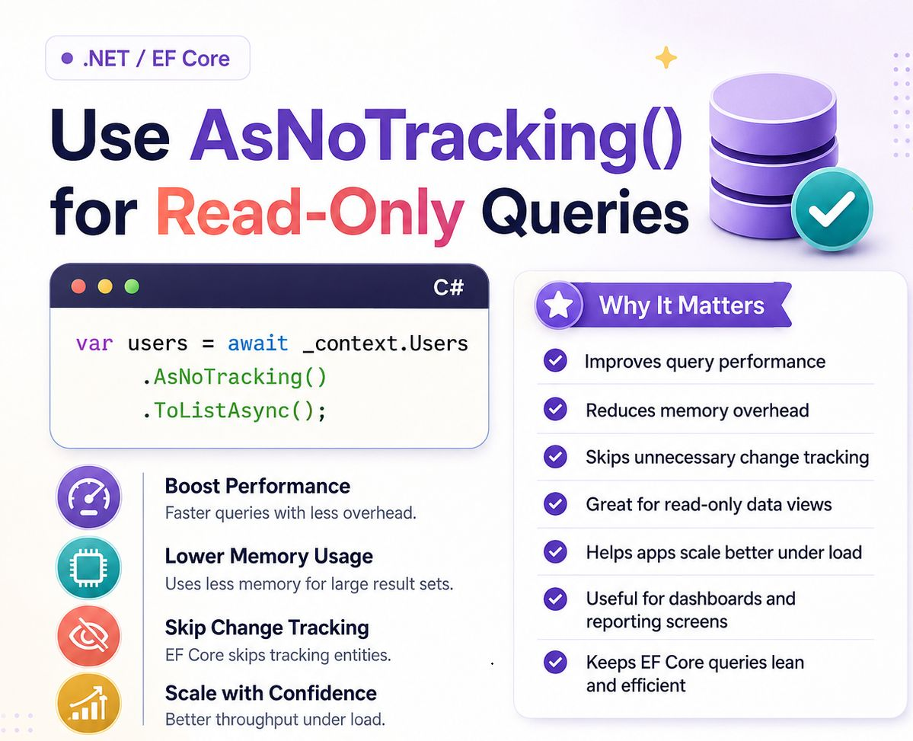
What to Learn
- Change tracking, entity states
AsNoTracking,AsTracking
EF Core tracks entities by default and detects changes for SaveChanges().
| State | Meaning |
|---|---|
| Added | Will be inserted |
| Modified | Will be updated |
| Deleted | Will be deleted |
| Unchanged | No changes |
| Detached | Not tracked |
Read-only query (faster, no tracking overhead):
var books = context.Books
.AsNoTracking()
.Where(b => b.Price > 10)
.ToList();Check entity state:
var state = context.Entry(book).State; // Modified, Added, etc.Use tracking for updates; use AsNoTracking() for read-only APIs and reports.
10. CRUD Operations
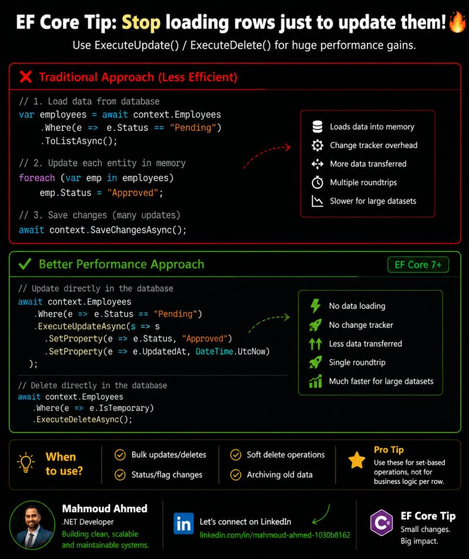
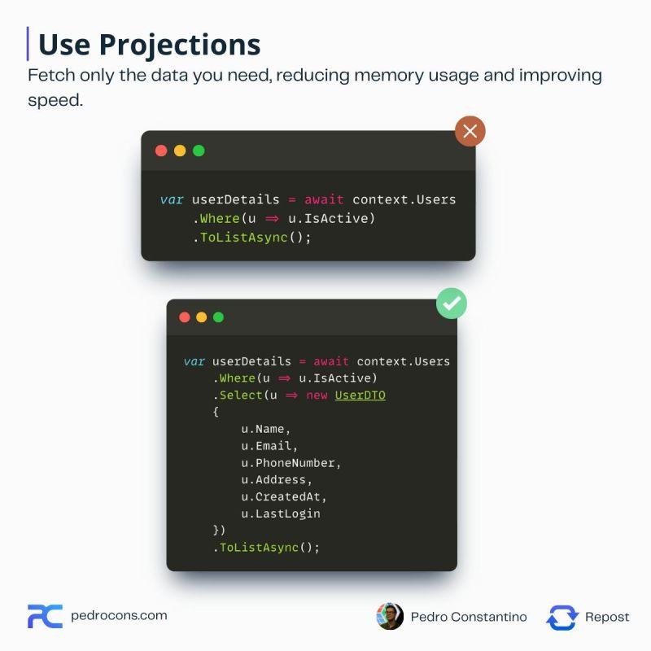
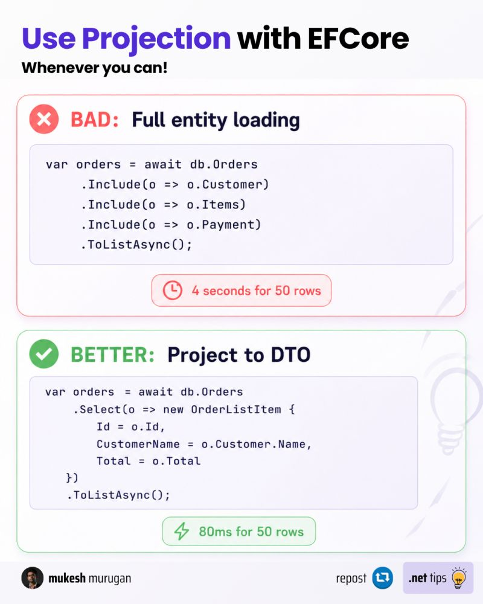
What to Learn
- Insert, read, update, delete
SaveChanges,SaveChangesAsync
Create:
var book = new Book { Title = "EF Core Guide", Price = 29.99m };
context.Books.Add(book);
await context.SaveChangesAsync();Read:
var book = await context.Books.FindAsync(1);
var list = await context.Books.Where(b => b.Price > 10).ToListAsync();Update:
var book = await context.Books.FindAsync(1);
book.Price = 19.99m;
await context.SaveChangesAsync();Delete:
var book = await context.Books.FindAsync(1);
context.Books.Remove(book);
await context.SaveChangesAsync();Bulk delete (EF Core 7+):
await context.Books.Where(b => b.Price == 0).ExecuteDeleteAsync();11. Transactions
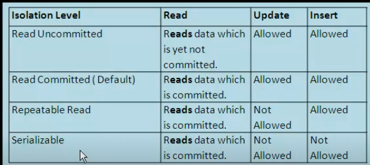
What to Learn
- Default transaction, manual transactions
BeginTransaction, commit, rollback
SaveChanges() runs inside a transaction by default.
Manual transaction:
using var transaction = await context.Database.BeginTransactionAsync();
try
{
context.Books.Add(new Book { Title = "A" });
context.Authors.Add(new Author { Name = "John" });
await context.SaveChangesAsync();
await transaction.CommitAsync();
}
catch
{
await transaction.RollbackAsync();
throw;
}TransactionScope for distributed transactions across multiple resources.
12. Concurrency
What to Learn
- Optimistic vs pessimistic concurrency
- Row version, concurrency tokens
DbUpdateConcurrencyException
Optimistic concurrency (default in EF Core):
public class Product
{
public int Id { get; set; }
public string Name { get; set; }
[Timestamp]
public byte[] RowVersion { get; set; }
}Handle conflict:
try
{
await context.SaveChangesAsync();
}
catch (DbUpdateConcurrencyException)
{
// Reload entity or ask user to retry
}Pessimistic (raw SQL lock):
var emp = context.Employees
.FromSqlRaw("SELECT * FROM Employees WITH (UPDLOCK) WHERE Id = {0}", id)
.FirstOrDefault();13. Performance Optimization
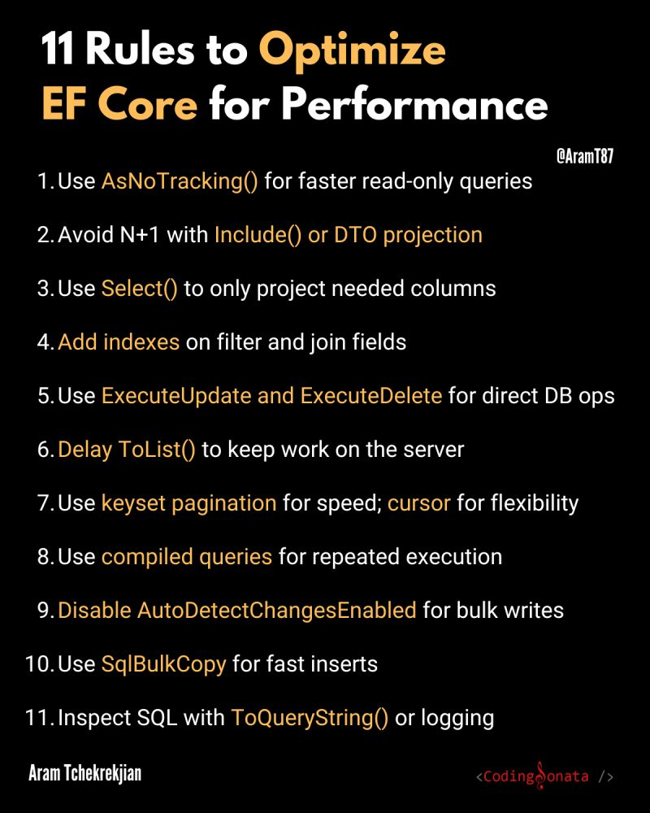
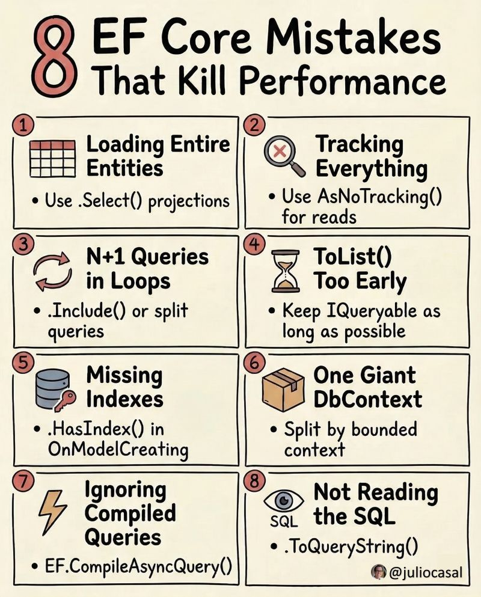
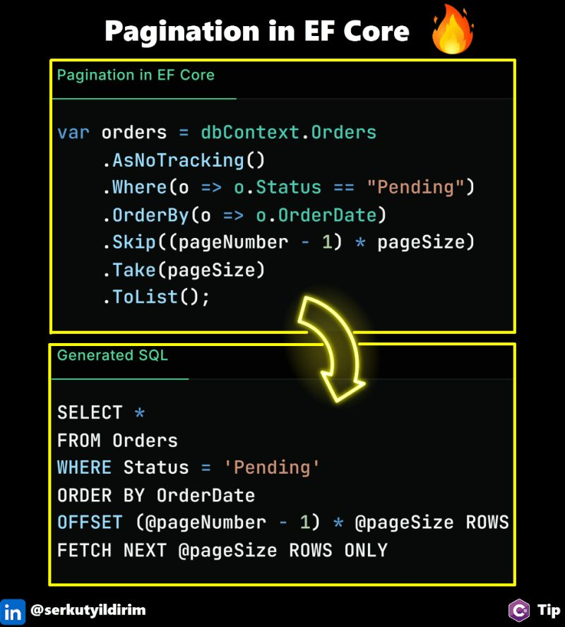
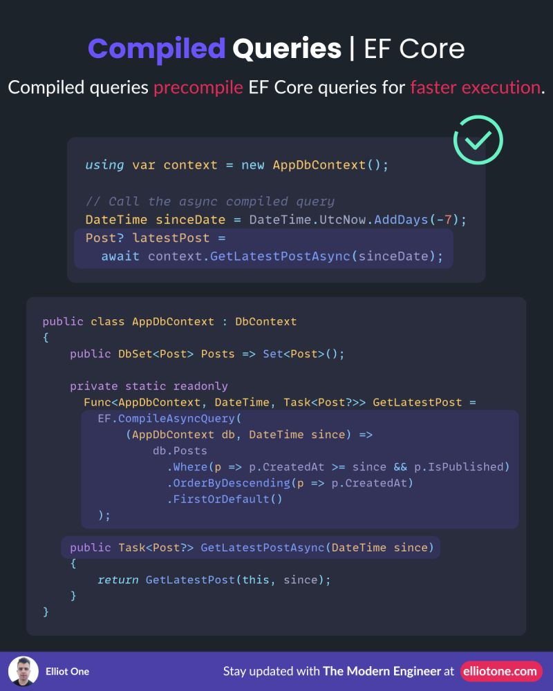
What to Learn
AsNoTracking, projection, pagination- Compiled queries, split queries, indexes, N+1 avoidance
Key tips:
- Use
AsNoTracking()for read-only queries - Use
Select()to fetch only needed columns - Use
Include()only when related data is required - Add indexes on frequently filtered columns
- Use pagination for large datasets
Compiled query (reuses query plan):
private static readonly Func<AppDbContext, int, Task<Book?>> GetBookById =
EF.CompileAsyncQuery((AppDbContext ctx, int id) =>
ctx.Books.FirstOrDefault(b => b.Id == id));Split query (avoids cartesian explosion with multiple includes):
var authors = context.Authors
.Include(a => a.Books)
.AsSplitQuery()
.ToList();Connection resiliency:
options.UseSqlServer(connectionString, sql =>
sql.EnableRetryOnFailure(maxRetryCount: 3));14. Raw SQL and Stored Procedures
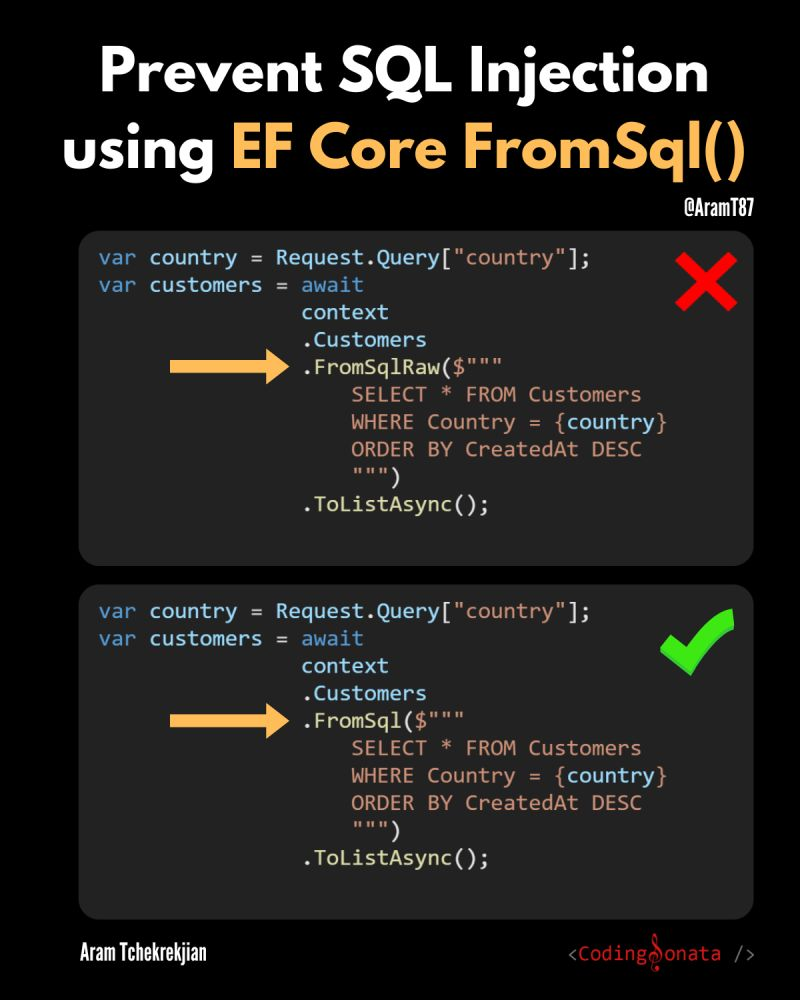
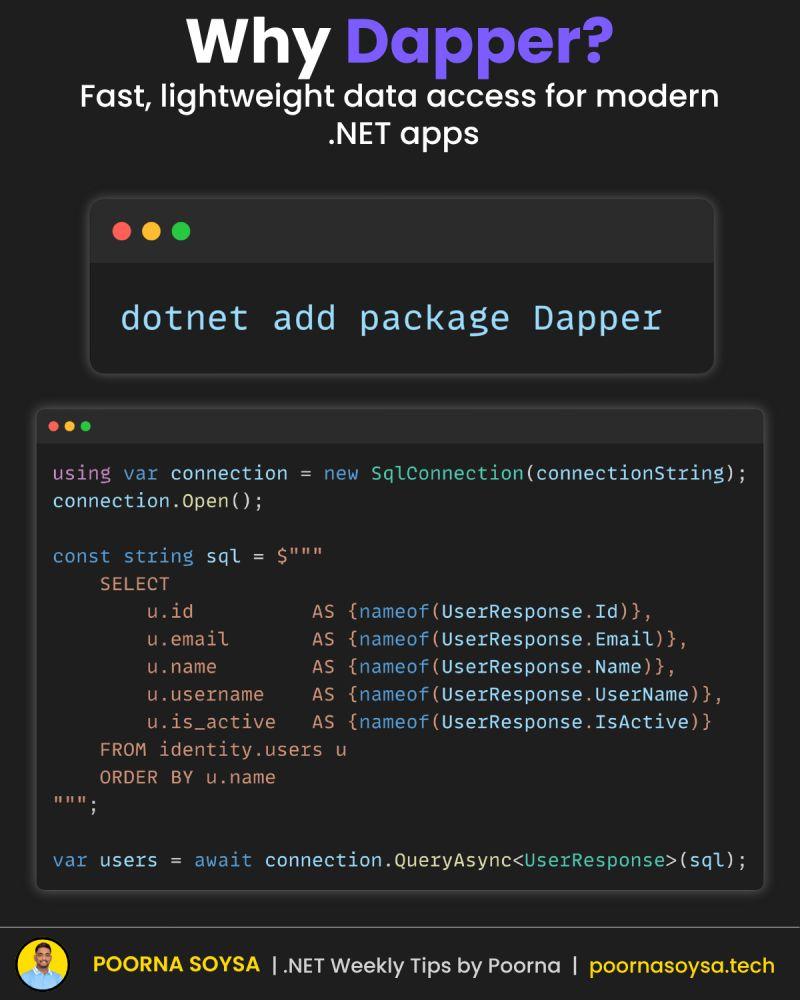
What to Learn
FromSqlRaw,FromSqlInterpolated- Stored procedures, SQL injection prevention
// Parameterized (safe)
var books = context.Books
.FromSqlInterpolated($"SELECT * FROM Books WHERE Price > {minPrice}")
.ToList();
// Stored procedure
var results = context.Books
.FromSqlRaw("EXEC GetBooksByAuthor @AuthorId = {0}", authorId)
.ToList();
// Execute non-query
await context.Database.ExecuteSqlRawAsync(
"UPDATE Books SET Price = Price * 1.1 WHERE CategoryId = {0}", categoryId);Always use parameters. Never concatenate user input into SQL strings.
15. Repository and Unit of Work
What to Learn
- Repository pattern, Unit of Work
- When it helps vs when it adds unnecessary abstraction
DbContext already acts as Unit of Work — it tracks changes and saves them together via SaveChanges().
Simple repository:
public interface IBookRepository
{
Task<Book?> GetByIdAsync(int id);
Task AddAsync(Book book);
Task SaveAsync();
}
public class BookRepository : IBookRepository
{
private readonly AppDbContext _context;
public BookRepository(AppDbContext context) => _context = context;
public Task<Book?> GetByIdAsync(int id) => _context.Books.FindAsync(id);
public Task AddAsync(Book book) => _context.Books.AddAsync(book).AsTask();
public Task SaveAsync() => _context.SaveChangesAsync();
}Use repository when you need testability or complex query abstraction. Skip it if it only wraps DbSet without adding value.
16. EF Core with ASP.NET Core
What to Learn
- DI registration, scoped lifetime
- Using EF Core in services, seeding data
// Program.cs
builder.Services.AddDbContext<AppDbContext>(options =>
options.UseSqlServer(builder.Configuration.GetConnectionString("Default")));
// Service
public class BookService
{
private readonly AppDbContext _context;
public BookService(AppDbContext context) => _context = context;
public Task<List<Book>> GetAllAsync() =>
_context.Books.AsNoTracking().ToListAsync();
}DbContext is registered as Scoped — one instance per HTTP request.
Seed data:
protected override void OnModelCreating(ModelBuilder modelBuilder)
{
modelBuilder.Entity<Book>().HasData(
new Book { Id = 1, Title = "Sample", Price = 9.99m });
}17. Testing EF Core Code
What to Learn
- In-memory provider, SQLite in-memory
- Integration tests, mocking repositories
SQLite in-memory (better relational behavior):
var options = new DbContextOptionsBuilder<AppDbContext>()
.UseSqlite("DataSource=:memory:")
.Options;
using var context = new AppDbContext(options);
context.Database.OpenConnection();
context.Database.EnsureCreated();
context.Books.Add(new Book { Title = "Test" });
await context.SaveChangesAsync();
Assert.Equal(1, context.Books.Count());EF Core InMemory (simple unit tests, not full SQL behavior):
var options = new DbContextOptionsBuilder<AppDbContext>()
.UseInMemoryDatabase("TestDb")
.Options;Prefer SQLite in-memory or a real test database for integration tests.
18. Advanced EF Core Topics
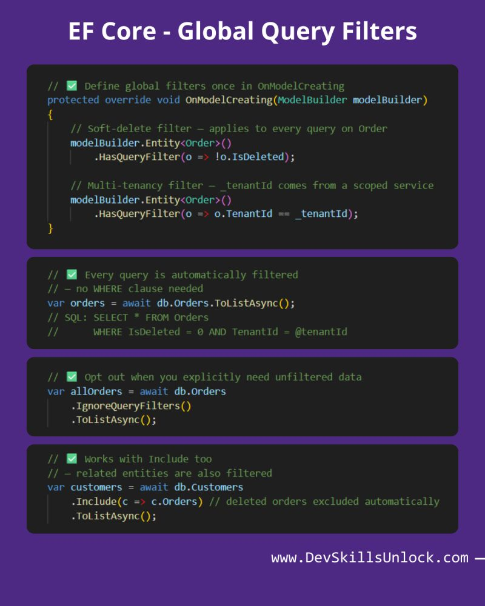
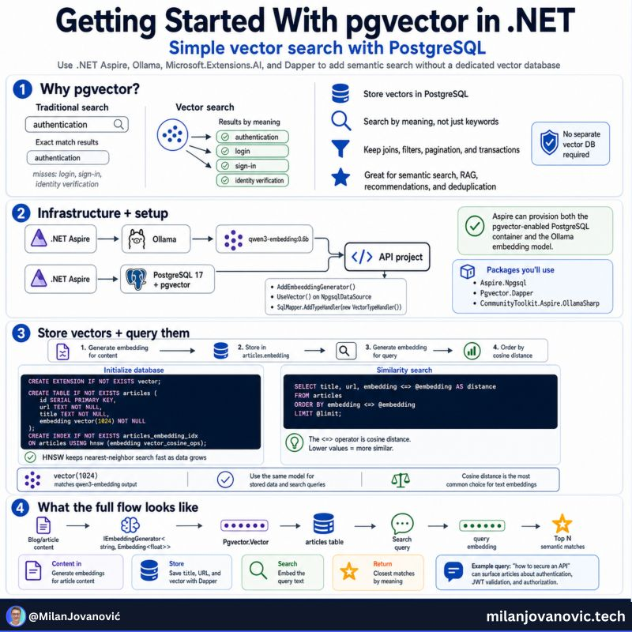
What to Learn
- Global query filters, soft delete
- Interceptors, value converters
- Inheritance mapping (TPH, TPT, TPC)
Soft delete with global filter:
public class Book
{
public int Id { get; set; }
public string Title { get; set; }
public bool IsDeleted { get; set; }
}
// OnModelCreating
modelBuilder.Entity<Book>().HasQueryFilter(b => !b.IsDeleted);SaveChanges interceptor for audit:
public class AuditInterceptor : SaveChangesInterceptor
{
public override InterceptionResult<int> SavingChanges(
DbContextEventData eventData, InterceptionResult<int> result)
{
// Set CreatedDate, ModifiedDate, etc.
return base.SavingChanges(eventData, result);
}
}Inheritance — TPH (single table, discriminator column):
modelBuilder.Entity<Payment>()
.HasDiscriminator<string>("PaymentType")
.HasValue<CreditCardPayment>("Credit")
.HasValue<PayPalPayment>("PayPal");19. Security, Diagnostics, and Best Practices
What to Learn
- SQL injection prevention
- Sensitive data logging, detailed errors
- Async queries, least privilege, input validation
Never enable sensitive logging in production:
// Development only
options.UseSqlServer(connectionString)
.EnableDetailedErrors()
.EnableSensitiveDataLogging(); // shows parameter values — dev onlyBest practices:
- Use parameterized queries (
FromSqlInterpolated, LINQ) - Use
AsNoTracking()for read-only endpoints - Use pagination for large result sets
- Keep DbContext scoped per request
- Use concurrency tokens for shared data updates
- Validate input before saving to prevent over-posting
- Use least-privilege database accounts in production
- Prefer
SaveChangesAsync()and async LINQ methods
// Safe async read
var books = await context.Books
.AsNoTracking()
.Where(b => b.Title.Contains(search))
.Take(50)
.ToListAsync();